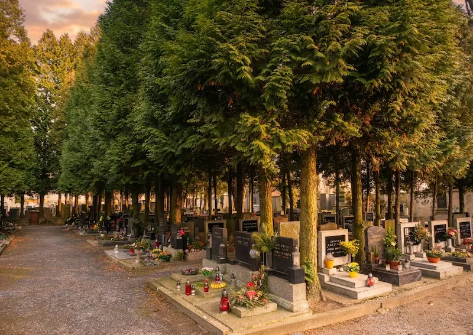

Máte své blízké na mělnickém hřbitově a nestíháte za nimi jezdit?
Vím, jaké to je. Život nás občas zavede úplně jinam, než kde máme kořeny. Máte své rodiče nebo prarodiče na hřbitově tady u nás na Mělníku, v Mšenu nebo třeba v Liběchově, ale bydlíte na druhém konci republiky. Nebo toho máte v práci tolik, že když už přijde víkend, prostě nezbývají síly na to vzít kýbl, motyčku a jet uklízet.
Není to o tom, že byste zapomněli. Jen ta vzdálenost nebo únava bývají občas silnější. A pak se stane, že tam člověk přijede jednou za čas a trápí ho pohled na zvadlé kytky nebo plevel, který se tam za tu dobu stihl usadit.
S čím vám můžu pomoct?
Nenabízím žádnou „profesionální údržbu památníků“, ale prostě ruce, které udělají to, co byste udělali vy, kdybyste tu byli.
- Pravidelně tam zajdu: Vytrhám trávu, seberu staré listí a vyhodím vyhořelé svíčky.
- Donesu čerstvé kytky: Ať už jsou to dušičkové věnce, vánoční chvojí nebo prostě jarní macešky.
- Očistím kámen a zapálím svíčku: Aby to místo prostě nevypadalo opuštěně.
Fotka jako pozdrav pro vás
Sama vím, že největší klid přinese fotka. Jakmile u hrobu skončím, vyfotím vám ho a pošlu na WhatsApp nebo do e-mailu. Budete tak vědět, že svíčka hoří a všechno je v pořádku. Budete mít ten dobrý pocit, že je o vaše blízké postaráno, i když jste zrovna stovky kilometrů daleko.
Ke každému hrobu chodím s úctou. Jmenuji se Žaneta a beru to tak, že se starám o kousek vaší rodinné historie. Pokud cítíte, že byste takovou pomoc potřebovali, prostě mi napište nebo zavolejte. Domluvíme se přesně na tom, co je pro vás důležité.